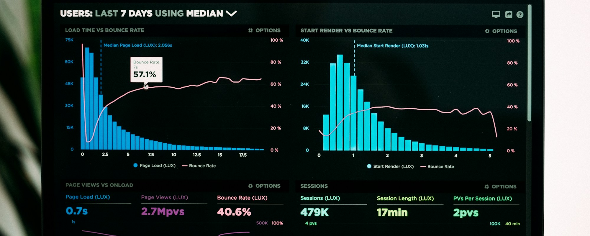

Focus sostenibilità: CAP Nord Ovest

Indicatori chiave di performance ambientale, sociale e di governance – esercizio 2023
I dati riportati provengono direttamente dal Bilancio di Sostenibilità 2024 di CAP Nord Ovest, relativo all'esercizio chiuso al 31 dicembre 2023. Dove disponibile, viene riportato anche il dato dell'anno precedente per confronto.
Valore economico generato (2023)
Dipendenti al 31/12/2023
Soci del Consorzio
Certificazioni ottenute
I principali indicatori ESG in forma grafica, ottimizzati per la lettura su smartphone.
| Indicatore | 2022 | 2023 |
|---|---|---|
| Valore economico direttamente generato | 265.292.432 € | 264.843.630 € |
| Valore economico distribuito (totale) | 261.224.201 € | 264.995.487 € |
| ↳ Costi operativi riclassificati | 254.326.872 € | 256.237.222 € |
| ↳ Remunerazione del personale | 5.904.902 € | 6.249.198 € |
| ↳ Remunerazione dei finanziatori | 780.988 € | 2.482.067 € |
| ↳ Remunerazione Pubblica Amministrazione | 211.439 € | 27.000 € |
| Valore economico trattenuto | 4.068.231 € | -151.857 € |
| Investimenti in Ricerca & Sviluppo | 77.535 € | N/D |
| Investimenti in formazione del personale | 40.417 € | 42.961 € |
Fonte: GRI 201-1 – Valore economico direttamente generato e distribuito. Bilancio di Sostenibilità CAP Nord Ovest 2024.
| Rifiuti prodotti (2023) – per tipologia | Quantità (tonnellate) | Classificazione |
|---|---|---|
| Energia elettrica acquistata | 11.448 GJ | Nel testo narrativo: 11.448,80 GJ |
| Gas metano | 16.986 GJ | Uso descritto in modo diverso nelle sezioni del report |
| GPL | 5.728 GJ | Uso descritto in modo diverso nelle sezioni del report |
| Totale consumi energetici | 34.162 GJ | Valore pubblicato |
| Energia rinnovabile acquistata (certificata) | – | La tabella GRI indica un trattino |
| Logistica e trasporti | Valore |
|---|---|
| Flotta mezzi complessiva | > 200 mezzi |
| Operatori logistici esterni | 9 |
| Punti vendita sul territorio | 60 (Piemonte, Liguria, Valle d'Aosta) |
| Poli logistici principali | Fossano (CN) + Cuneo |
Fonte: GRI 306 – Rifiuti; GRI 302 – Energia. Bilancio di Sostenibilità CAP Nord Ovest 2024.
| Composizione del personale al 31/12/2023 | ||
|---|---|---|
| Categoria | Uomini | Donne |
| Dipendenti totali | 76 | 31 |
| Tempo indeterminato (full-time) | 67 | 31 |
| Tempo determinato | 9 | 0 |
| Part-time a tempo indeterminato | 2 | 11 |
| Collaboratori esterni (agenti) | 60 | 13 |
| Contratti complessivi (dip. + rappresentanti) | 180 persone | |
| Indicatore sociale | Valore 2023 | Note |
|---|---|---|
| Presenza femminile sul totale dipendenti | 29% | 31 donne su 107 dipendenti |
| Distribuzione regionale – Piemonte | 93 dipendenti | 87% del totale |
| Distribuzione regionale – Liguria | 13 dipendenti | 12% del totale |
| Distribuzione regionale – Valle d'Aosta | 1 dipendente | 1% del totale |
| Fascia d'età: under 30 | 12% | ~13 persone |
| Fascia d'età: 30–50 anni | 44% | ~47 persone |
| Fascia d'età: over 50 | 44% | ~47 persone |
| Categorie: Operai | 23% (25 persone) | Solo uomini |
| Categorie: Impiegati | 69% (74 persone) | 46 uomini, 28 donne |
| Categorie: Quadri e dirigenti | 11% (8 persone) | 5 uomini, 3 donne |
| Turnover in uscita | 16% | 17 persone |
| Turnover in entrata | 15% | 16 persone |
| Dipendenti appartenenti a categorie protette | 2 | – |
| Congedo parentale usufruito | 1 persona | 100% rientrati al lavoro |
| Infortuni gravi sul lavoro | 0 | Nessun decesso o infortunio grave nel 2023 |
| Episodi di discriminazione interna | 0 | Nessun caso riscontrato nel 2023 |
| Ore di formazione per categoria (2023) | Ore erogate |
|---|---|
| Categoria 1 (dirigenti / quadri) | 112 ore |
| Categoria 2 (impiegati) | 414 ore |
| Responsabili di settore | 256 ore |
| Investimento totale in formazione | 42.961 € |
Fonte: GRI 2-7, GRI 401, GRI 403, GRI 404. Bilancio di Sostenibilità CAP Nord Ovest 2024.
| Indicatore di Governance | Valore / Status | Note |
|---|---|---|
| Soci del Consorzio | ~3.000 | Assemblea annuale + assemblee parziali provinciali |
| Consiglio di Amministrazione | 15–27 membri | Rinnovo ogni 3 anni |
| Comitato Esecutivo | 7 membri | Riunioni mensili |
| Collegio Sindacale | 3 titolari + 2 supplenti | Revisione: Deloitte & Touche Spa (2023–2025) |
| Organismo di Vigilanza (O.d.V.) | ✔ Attivo | 3 membri; presidente: dott. Marco Prandi |
| Segnalazioni whistleblowing ricevute (2023) | 0 | Nessuna segnalazione pervenuta |
| Codice Etico | ✔ Rinnovato nel 2023 | – |
| Modello 231 (D.Lgs. 231/2001) | ✔ In vigore | Include politica anticorruzione |
| Certificazione ISO 22005:2008 | ✔ Ottenuta | Rintracciabilità nella filiera alimentare (grano/cereali) |
| Certificazione ISO 45001 | ✔ Gen 2024 | Salute e sicurezza sul lavoro – scadenza gen 2027 |
| Certificazione UNI/PdR 125:2022 | ✔ Dic 2023 | Parità di genere |
| Categorie di stakeholder mappate | 9 | Dipendenti, clienti, agricoltori, fornitori, istituti bancari, ecc. |
| Bilancio di Sostenibilità pubblicato | ✔ Primo nel 2024 | Anticipazione volontaria degli obblighi UE |
Fonte: GRI 2-9, GRI 2-10, GRI 205, GRI 418. Bilancio di Sostenibilità CAP Nord Ovest 2024.
Elaborazioni basate sui trend 2022→2023 del Bilancio di Sostenibilità 2024 e sulle tendenze del settore agroalimentare cooperativo italiano.
⚠️ Le stime riportate sono elaborazioni a scopo didattico, basate sui dati del Bilancio di Sostenibilità 2024 e su trend di settore. Non costituiscono previsioni ufficiali di CAP Nord Ovest.